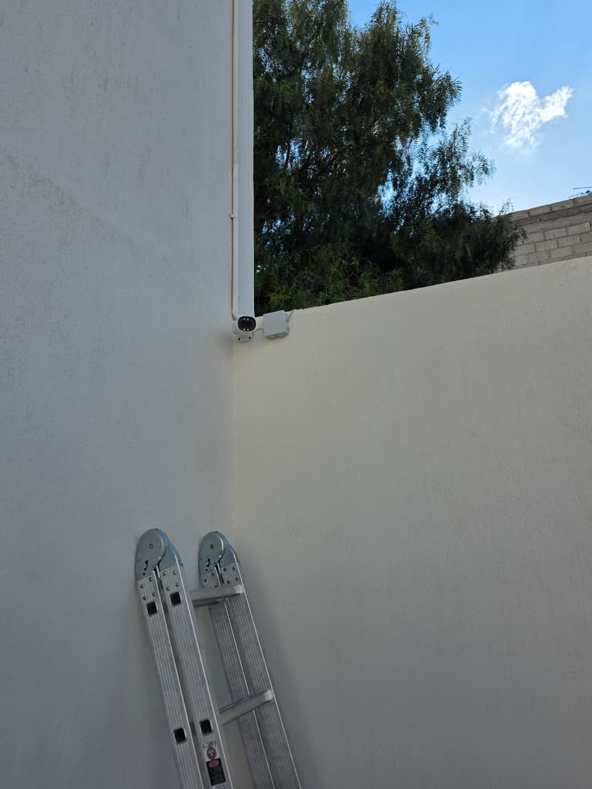
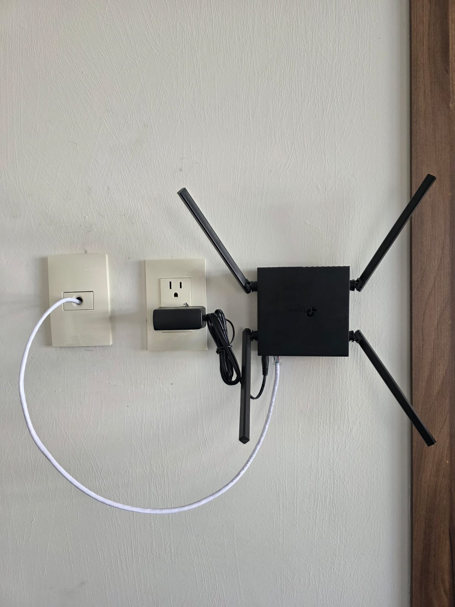
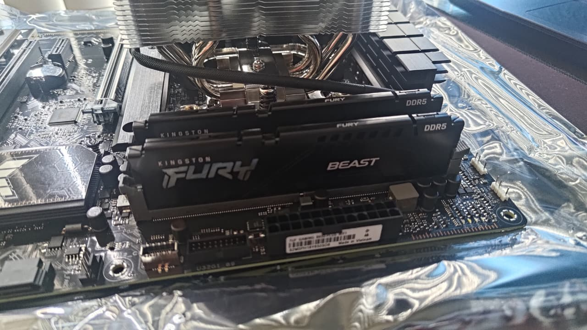

Perfil Profesional
Ingeniero en Sistemas Computacionales con un enfoque único que combina el rigor técnico con la creatividad visual. Especialista en desarrollo Front-End y mantenimiento de sistemas, lo que me permite diseñar interfaces de usuario intuitivas y estéticamente superiores. Comprometido con la eficiencia tecnológica y la innovación en la experiencia de usuario.
Experiencia con Propósito
2023 - 2025 | Mural Táctil
Ingeniero de Software y Soporte Técnico
- Desarrollo y mantenimiento de asistentes conversacionales basados en el framework RASA, optimizando la interacción mediante procesamiento de lenguaje natural.
- Gestión y mantenimiento integral de aplicaciones empresariales en Microsoft Power Apps, asegurando la continuidad de los flujos de trabajo corporativos.
- Administración y mantenimiento de bases de datos, garantizando la integridad, seguridad y optimización de las consultas de los sistemas.
- Liderazgo en la automatización y creación de documentación técnica exhaustiva para múltiples proyectos de WordPress, facilitando su escalabilidad.
- Elaboración de presentaciones ejecutivas y propuestas técnicas/comerciales de alto nivel para el desarrollo de nuevos proyectos tecnológicos.
- Ejecución de pruebas de QA manuales para la detección y corrección de errores críticos antes del despliegue en producción.
2018 - Presente | Freelance
Ingeniero de Soporte e Infraestructura IT
- Diseño, despliegue y configuración de redes LAN/WLAN y Access Points para optimización de cobertura.
- Implementación y configuración de sistemas de videovigilancia (CCTV) y cámaras IP de seguridad.
- Soporte en ciberseguridad: recuperación de cuentas comprometidas y educación preventiva en MFA y Phishing.
Tecnologías y Competencias
Proyectos Destacados
Asistente Inteligente (RASA Framework)
Desarrollo de un bot conversacional con Procesamiento de Lenguaje Natural (NLP) para automatizar y escalar la atención al cliente de manera eficiente.
Desarrollo Ágil con WordPress
Implementación rápida de plataformas web optimizadas, combinando diseño estructurado y herramientas ágiles para entregar interfaces funcionales y de alto impacto estético.
Migración y Modernización Web
Transición de sitios web a infraestructuras modernas y actualización de sistemas heredados, minimizando tiempos de inactividad y mejorando la seguridad.
Optimización y Automatización
Auditoría y mejora de sistemas web existentes para automatizar flujos de trabajo, reduciendo tareas manuales y resolviendo cuellos de botella operativos.
Gestión de Infraestructura Cloud
Despliegue, configuración y administración de proyectos en plataformas de alojamiento en la nube (AWS, Microsoft Azure), garantizando estabilidad y alta disponibilidad.
Tecnologías y Competencias
Sitios Web Desarrollados
Evidencia de Infraestructura y Soporte

Implementación de Cámaras IP

Despliegue de Red WLAN

Soporte a Servidores